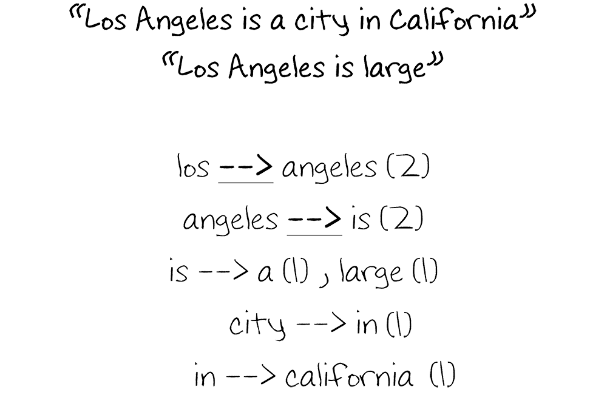
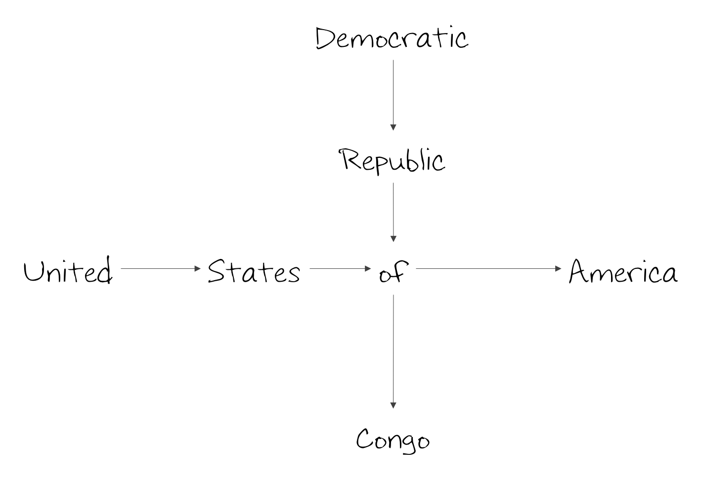
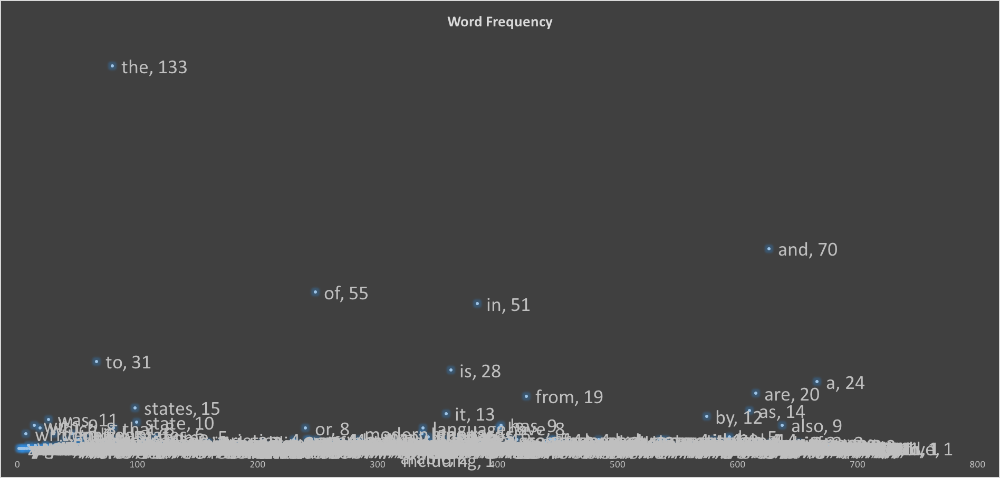
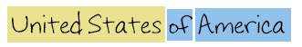
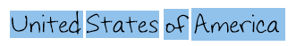
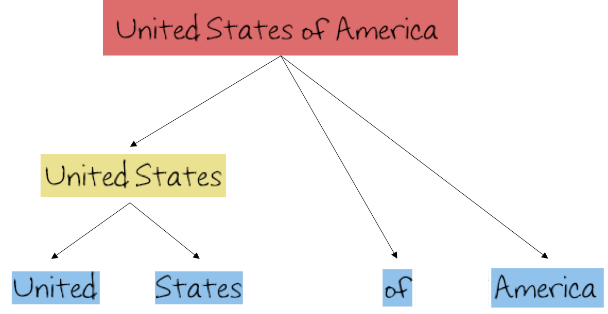

Preface
There exists a problem with the way science functions today. Machine learning literature is often so focused on it’s inner-circle audience (researchers and other scientists), that it neglects the task of sharing and explaining the results to the more general population. This crucial task of communication is often left up to the media, which in attempting to gain the reader’s attention will either sensationalize findings or risk not being read at all.
This hints at broader issue at hand, which is effective communication. How do we begin to make ML more understandable? Or for that matter, any other highly-specialized sector of technology?
With the aim to provide some insight into this issue, and through the spirit of scientific research and open source work, I present a special natural language processing project.
The mission is simple: attempt to create a natural language processing AI, and in doing so, outline, explore, and present the results from the perspective of a student.
This means less usage of highly scientific terminology and more of simple, easy to understand research results for anyone to examine and learn from. More specifically, this is a project that aims to explore what occurs when we attempt to model computer algorithms using what we know about psychology and neuroscience.
"What does ___ mean?"
Examine the following scenario:
Rewind to the first grade. You and your best friend are talking about the homework during class. Your friend mentions an unfamiliar word, lets say, “complex.” You ask what “complex” means and your friend replies “its like complicated.” You nod or perhaps smile.
In this scenario, you didn’t learn anything more about the word “complex” other than the fact that it’s close to “complicated” in terms of what it signifies.
So, if we imagine that each word in your vocabulary is a small node or sphere, you simply grouped up the nodes “complicated” and “complex” together, and said to yourself that the two are used to mean approximately the same thing.
The question is, can we replicate this natural clustering that humans do in terms of a program that can group up words that mean the same thing? It’s important to note that we can’t simple pull up a ready list of synonyms for each word we are interested in. We want a program to understand the connections between words without having to rely on a human-categorized set of connections.
We want to make a program to “understand” the meaning of words in terms of other words, and do so unsupervised. Such program can then be applied to many uses, such as summerizing text (more on that later).
Concept Map: Construction
Besides learning from friends or people around me, as a second English language learner, I often found myself using the dictionary to understand the meaning of words.
Similarly, I propose the usage of a dictionary to allow the program to form connections. From intuition, any dictionary definition will either define words by using synonyms or by mentioning the components that make up the concept the word refers to.
Here’s an example: For a word like “angry,” a definition will probably say “the feeling of being upset, frustrated, or infuriated.” “Upset”, “frustrated”, and “infuriated” are all semantically close to angry and “feeling” is a component of being angry.
Here’s a proposition on how a program can use this to build a concept map:
1. Look up a word in the dictionary, call this word the origin.
2. Connect each word in the returned definition to the origin word.
3. For each word in the returned definition, repeat step 1.
For the dictionary, a free API provided by Pearson is used. The method is simply a recursive function that outputs to console. The output is then copied, refined, and graphed on Gephi.
The result of this simple hypothesis was astounding. As seen, the program clustered things like days of the week around “week,” even though “Monday” is not a synonym of “week.”
Concept Map: Potential and Limitation
What happened in the experiment above is that we replicated a very minor apparent mental process that people do when they seek to understand words. Of course, we are capable of much higher cognitive functions, so this program won’t be able to understand the hierarchy of how words are structured just yet (“water is a liquid and a liquid is a substance”).
What it can do, however, is read a dictionary and make semantic connections related to broad meaning and not just immediate synonyms.
If refined and expanded, I think it can become an example of a reverse engineered dictionary: you ask it what a word means, and it will try to gather what type of connections is has and come up with a definition.
Of course, such auto definer is not very useful, and I will not attempt to make it, but I mention it because I believe it entails is a step in the right direction.
In order to build more useful applications, this map must be refined and expanded. The first step in this is using a different type of knowledge source in order to access more words and terms.
Concept Map: Expanding and Refining
A dictionary is nice, but I don't use it often. If I want to learn about something, I usually click the first Wikipedia link after searching for a topic on Google.
Here's a replicated version of the dictionary experiment using Wikipedia. Tip: click the image and zoom to the branches.

Here's an example run through of the algorithim used to generate this:
Assuming you have a list of hashtables called links with the following structure: source, target, weight
- Look up the word "Los Angeles" (origin or source word)
- Split each word of the article by whitespace
- Set "Los Angeles" as source and connect it to each word
- If this link alreaedy exists, increment the weight entry.
- Repeat step 1 on every word in the article
Topic Detection: Word Pairs
The results with Wikipedia are impressive as they show two improvements: one, increased breadth (size of wiki vs. size of dictionary api) and two, the increased complexity of each result.
In order to make use of these two additions, one must be able to "digest" each result in greater detail. Here, I will explore how to one might go about creating topic detection. This will allow the program to recognize "United States of America" instead of just "United", "States" "of", and "America" seperately.
In terms of code, each node and edge are represented by a hashtable of links. These links include the source or origin node, the target node, and the weight of the edge connecting them. The weight is simply the frequency of the target node appearing in the article.
The starting hypothesis behind this project assumed that each word can be viewed as a node connected by an edge, modeled after neurons that are connected by synapses. In neuroscience, Hebbian theory explains that neurons that fire toghether, wire toghether.
As such, one can create a list of word pairs appearing in the article, and then increase the weights everytime they're encountered. In the end, and after many articles have been examined, one can sort this list of pairs by weight and see which pairs are likely to appear toghether. Allow me to illustrate:
{kind=link}
Here, the two sentences of "Los Angeles is a city in California" and "Los Angeles is large" are broken down to two word pairs. If the program picks the highest weighted pairs, then "Los Angeles" would be a topic and "Angeles is" would be another topic. Over many sentences, the connection between "Los" and "Angeles" would be very large compared to "Angeles" and "is".
Topic Detection: Aggregation
Assume, following the above method, the sentences "United States of America" and "Democratic Republic of Congo" appear exactly the same number of times (equal weights all throughout). Modeled using nodes and edges, here is how it would appear:
{kind=link}
Now since this is an AI project, assume the program is asked to complete this phrase: "United States of [...]"
Any human can obviously complete it with "America". However, looking at the model, it is unclear weather its "United States
of Congo" or "United States of America" since both edges leading to "America" and "Congo" have the same weight.
In current implementation, this issue is solved by aggregating pairs that have strong connections. This means that one must begin with a list of pairs alike the one above. Here's the puedocode:
Assuming you have a word pair list (the one above), an empty list called buffer, and given "United States of America is":
- Examine "United" and "States", if there's a strong connection, add them to buffer
- Now examine "States" and "of", if there's a strong connection, add "of" to buffer
- Examine "of" and "America", if there's a strong connection, add "America" to buffer
- Examine "America" and "is", if there's a strong connection, add "is" to buffer
- "America" and "is" don't have a strong connection, therefore, stop and establish the contents of buffer as a topic ("United States of America")
Notice the keyword strong connection. In the code, this is set to an edge weight higher than 1 (in other words, we have seen that word X came before Y more than once).
Topic Detection: Dealing with Non-Functional Words
The above algorithim will generate large numbers of topics such as "city of" and "as in" given that words like "of", "as", "in", "the", etc., pair up with almost everything. In order to generate better topics, one must handle those non-functional words. Quick note: the specifics on what to keep and what not to keep in refining topic detection is a matter of choice at this point and will be used to illustrate unsupervised learning. The rule I will implement is as follows:
Topics must not have trailing non-functional words.
I chose this given rule just following some examples: from "city of" I just need "city", from "the united states" I just need "united states", and for "city of los angeles" I would want the entire thing. In order to implement this rule, one must be able to distinguish between a non-functional word and a functional word.
Topic Detection: Refining Using DBSCAN
In machine learning, supervised learning means you let the machine run many trial and error gueses and "tip" it in the right direction, until it gets it right. For instance, a machine learning code trying to distinguish between a picture of a dog versus a picture of a cat will need a human to "train" it, or tell it which is which for X number of pictures until it can begin forming patterns that allow it to distinguish what makes a dog picture versus what makes a cat picture.
Unsupervised learning throws the training aspect out of the window. In other words, you don't tell it whats a dog picture and whats a cat picture, you just ask it to come up with 2 catagories of pictures. The machine will then attempt to stastically seperate out the catagories. In the end, you give it a picture of a dog, and it tells you thats a picture of catagory 1, for instance.
Unsupervised learning is hard to get right, and I doubt anyone uses it to catagorize animal pictures. However, how can one go about detecting non-functional word without supervision? I will begin by outlining some of the patterns I noticed regarding non-functional words.
Recall the first dictionary example run. In it, most non-functional words were in the center becasue they were connected to almost every node. This hints that in any given article, the frequency of non-functional words will be high.
In terms of code however, even if one is to keep track of a word's frequency, how can it be used to distinguish between two catagories. Moreover, even relative frequency (frequency of a word divided by the total number of words seen), changes as you explore the articles. There's a shifting scale problem but frequency is certainly a good start. I graphed the frequencies of the words after examining a couple of articles:

{kind=link}
As seen in the picture, the frequency of non-functional words is greatly larger than the other words. I will use this fact to build a unsupervised classifier.
DBSCAN, or Density-based spatial clustering of applications with noise, is an unsupervised learning algorithim that divides data into catagories based on density. K-means is another unsupervised algorithim, but it requires clusters to be of equal size to work well. As seen in the graph, K-means is certainly not going to work given that the non-functional words are more of outliers than they are a cluster.
Quick note: I tried K-means, and it worked fine. However, DBSCAN had an unbelievable accuracy and I decided to go with that instead.
Feeding the data into DBSCAN showed amazing accuracy, but it required a huge number of articles to detect "was" as a non-functional word (45 thousand articles). When I attempted to save the article data and run DBSCAN on it afterwards, my computer kept sending a kill signal to the code since it was using too much memory.
I, as a human, didn't think I needed 45 thousand articles to see that "was" is a non-fucntional word, so why was the program struggling? After days of thinking, I found the solution when I realized that I had to introduce another feature to make the process more effiecent. This feauture was the "spread" or prevalency of the word. In other words, keep track of a number that answers the question "In how many diffrent articles did you see word X?". This was key, and after implementing this counter, I was able to detect more non-funtional words than I ever thought existed with just 800 articles. Now, I keep track of how frequency and how prevalent each word is.
After implementing DBSCAN effectively, I implemented the rule of no trailing non-funtional words within topics. So far, I'm impressed with the results and would like to reflect on the process.
Topic Detection: Reflection
While the solution offered above works, it seems a far shot away from the complex analysis the brain must be doing in understanding topics and the components of those topics. Yes, neurons that fire toghether wire toghether, and one can replicate this idea in code to generate two word pairs. However, because humans can conceptualize and tokenize on a variety of abstraction levels, the brain must be able to somehow remember the specific route of neurons.
This is absolutely essential, and it's a missing gap in the technique described above since the program is simple taking the longest plausable combination of words and establishing them as a topic.
In order to truly conceptualize, the program must be able to identify "United States of America" both as one big topic, as the collection of "United States", "of", and "America", and also as "United", "States" "of", and "America" as seperate words. In other words, it must contain a model that can capture all three of the images below at once


This is clearly a problem of abstraction: how detailed or ("literal") do you want the program to see topics? Humans can switch abstraction levels easily. It is as such seen that when given a third grade test with the question "what is yellow and gives us heat", most AI stumbles; there are so many things that are yellow and give off heat to a computer.
In any case, here's a more accurate model in my view. I think this mirrors the mental understanding of humans a lot more accurately since it shows different levels of abstraction, from elementary words to larger aggregations. In the future, a seperate graph that shows how topics are constructed can be made, enhancing the accuracy of the overall project. However, since I can't think of a current use, aggregating pairs into the most general possible topic will do.
